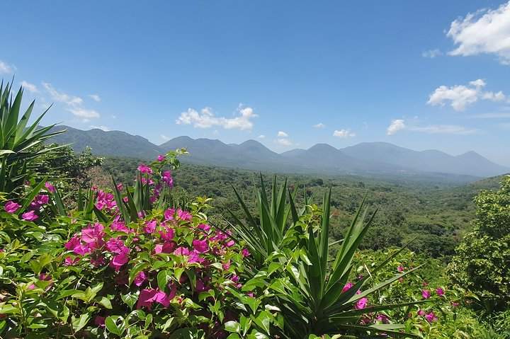

Departamento: SONSONATE
Cabecera: Sonsonate
Municipios: 16
Extencion territorial: 232.5 km²
numero de habitantes: 72,951
Atracción turistica: Entre Rios
Sonsonate es una ciudad y municipio del departamento homónimo, del cual es también su cabecera. La localidad se fundó con el nombre de "Villa de la Santísima Trinidad" en el año 1553, en una zona productora de cacao. El año 1821 formaba parte del territorio de Guatemala, pero en 1823 se anexó a El Salvador. La celebración de la Semana Santa en Sonsonate se considera parte del patrimonio religioso del país
Tiene el Puesto n° 6 es uno de los departamentos mas poblados de El Salvador con una población estimada de 72 158 habitantes para el año 2013.
Una vez consumada la conquista en la denominada provincia de los Izalcos, a mediados del siglo XVI, varias familias de españoles se asentaron en las tierras de los nativos. La zona era rica en recursos, ya que en ella se cultivaban el cacao y el bálsamo negro, que pronto comenzaron a exportarse. Sin embargo, los asentamientos de los españoles y la explotación de la tierra se desarrollaban sin orden alguno, lo que provocaba no pocos altercados. Por esa razón, las leyes de la corona española prohibían que los peninsulares convivieran con los naturales.
El año 1552, y por iniciativa del mercader Antonio Domínguez junto a otros individuos con sus respectivas familias radicadas en las orillas del río Grande de Sonsonate, fue solicitada la fundación de la villa del Espíritu Santo ante el alcalde mayor de Acajutla, Gonzalo de Alvarado. Autorizada la petición, se realizaron los respectivos trazos para erigir la pequeña urbe.
Para 1553, era alcalde mayor de Acajutla don Francisco del Valle Marroquín. Este personaje, junto al alcalde de la ciudad de Santiago de los Caballeros, Juan de Guzmán, procedió a retirar a los peninsulares de los poblados indígenas, a pesar de los reclamos subsiguientes. Sin embargo, los intereses irreconciliables de los nuevos colonos obligaron a buscar otro asiento, el cual fue establecido probablemente el 28 de mayo, y que tuvo como su principal promotor a la Orden de Santo Domingo. Además, el obispo de Guatemala, Francisco Marroquín, ordenó el cambio del nombre a Villa de la Santísima Trinidad de Sonsonate.
Ya en 1558, ostentaba el cargo de alcalde mayor de Sonsonate, don Alonso de Paz, y la villa era considerada como la cabecera principal de la provincia, que se complementaba como plaza comercial del puerto de Acajutla.En 1570, la orden de los Dominicos fundó dos sedes en la Nueva España: una ubicada en Chiapas y la otra en Sonsonate, que tuvo su asiento provisional en Izalco, aunque en Sonsonate se erigió el templo de Santo Domingo. En esos años, según una crónica de Juan López de Velasco, se estimaba la población en «2000 personas repartidas en 400 familias españolas», y también se daba relevancia a la intensa producción de cacao. Un personaje que ocupó el cargo de alcalde mayor entre 1583 y 1589 fue Juan de Mestanza, poeta que fue amigo de Miguel de Cervantes.
Para el año 1770, según consigna el arzobispo Pedro Cortés y Larraz, Sonsonate era cabecera de la parroquia homónima que comprendía a San Miguel Sonsacate, San Francisco Tacuzcalco, San Antonio del Monte y Santa Isabel Mejicanos, cuyo nombre se debía al asentamiento de tlaxcaltecas y mexicas en el tiempo que se fundó la ciudad. Además, el religioso calculaba su población en 2836 personas distribuidas en 644 familias.
Tras la firma del Acta de Independencia de América Central del 15 de septiembre de 1821, Sonsonate se encontraba anexa al estado de Guatemala. Sin embargo, debido a la proximidad con la capital salvadoreña, las autoridades de la villa giraron invitación a los otros poblados de la antigua alcaldía mayor para que se unieran al estado de El Salvador, lo cual se ratificó el 22 de diciembre de 1823. Para el 1 de abril de 1824, la primera asamblea constituyente del estado salvadoreño otorgó el título de ciudad a Sonsonate. Años después, en 1833, llegó a ser capital de la República Federal de Centro América por decreto ejecutivo del 14 de octubre. El estatus duró hasta el mes de junio de 1834, cuando las autoridades se trasladaron a San Salvador. En ese tiempo, Sonsonate era la cabecera del departamento del mismo nombre, pero en 1835 se trasladó a Santa Ana. Dos años después el departamento se dividió en dos: el mismo Sonsonate y el de Santa Ana, por lo que la ciudad volvió a tener la calidad de cabecera. En un documento denominado Estadística de 1853 se refería que el poblado tenía 4472 habitantes repartidos en los barrios del Centro, El Pilar, San Francisco, Veracruz, El Ángel y Mejicanos. Asimismo
En 1894 ocurrió en la población la Revolución de los 44, que propició el golpe de estado contra el gobierno de Carlos Ezeta. Durante la época dorada del café, a principios del siglo XX, fue la ciudad más rica del país. Para el siglo XX, y en la década de los años 1980, Santa Ana se vio afectada por la Guerra Civil de El Salvador.9 Con la firma de los Acuerdos de Paz de Chapultepec en 1992 (que puso fin a 12 años de guerra) y con el inicio del tercer milenio, la localidad experimentó un aumento de la población urbana debido a la emigración de habitantes de las áreas rurales y una expansión urbana acelerada con la construcción de nuevas colonias.
Sonsonate cuenta con 16 municipios. A continuación una lista de ellos:
1. Acajutla
2. Armenia
3. Caluco
4. Cuisnahuat
5. Izalco
6. Juayúa
7. Nahuizalco
8. Nahulingo
9. Salcoatitán
10. San Antonio del Monte
11. San Julián
12. Santa Catarina Masahuat
13. Santa Isabel Ishuatán
14. Santo Domingo de Guzmán
15. Sonsonate
16. Sonzacate
La extensión territorial del departamento de Sonsonate es de 1,226 kilómetros cuadrados.
Atecozol, Los Chorros de la CaleraCerro Verde, Volcán de Izalco, "Eco-bocana" San Juán,Playa Los Cobanos, Playa Salinitas, Playa y Puerto de Acajutla, Juayua.
La iglesia de la parroquia de la Santísima Trinidad fue bendecida el 1 de abril de 1887. Para 1986, el papa Juan Pablo II erigió la Diócesis de Sonsonate, por lo que el templo se consagró como catedral. Su primer obispo fue monseñor José Carmen di Pietro.
El 2001, la catedral sufrió daños por el terremoto del 13 de enero de ese año, hasta quedar inutilizada. Desde entonces fue sometida a reparaciones.
Este templo comenzó a construirse en el año 1732 en el barrio de El Pilar, hasta terminarse en 1840. Es de estilo barroco, y la fachada se encuentra dividida en tres cuerpos. A ambos lados se erigen dos torres con sus respectivos campanarios.
Es uno de los barrios más antiguos de Sonsonate, y el que mejor conserva su conjunto arquitectónico. Los edificios se encuentran construidos en su mayor parte de adobe, con techo de tejas a dos aguas. Contiene dos templos de importancia histórica como los son el de la Virgen del Pilar y Santo Domingo.
Es considerado el núcleo donde se desarrolló la ciudad desde la época colonial, y centro de las edificaciones más antiguas. Se encuentra rodeado por la catedral, casa consistorial y otros edificios de importancia comercial. En ese lugar se erigió un busto en honor al presidente Rafael Campo en el año 1913.
Un símbolo distintivo de la ciudad es una locomotora ubicada en el costado oriente de la misma, en el acceso de la carretera San Salvador-Sonsonate. La máquina simboliza la historia del ferrocarril en el El Salvador, en la que Sonsonate desempeñó un importante papel
Las fiestas patronales de Sonsonate se celebran del 25 de enero al 2 de febrero de cada año, en honor a la Virgen de la Candelaria. La primera imagen de Nuestra Señora de Candelaria llegó a la ciudad en el año 1604 y se encontraba ubicada en el antiguo templo de Nuestra Señora de la Merced. Para 1834 nació la Feria de Nuestra Señora de Candelaria, cuando la imagen fue trasladada al templo parroquial de la Santísima Trinidad. Dicho festejo se instituyó por Decreto gubernamental del Diario Oficial del 28 de abril de 1896, con el nombre de Feria de Candelaria.
En la época contemporánea, las fiestas patronales comprenden el desfile de Correo, feria de artesanías, feria ganadera, y los festivales musicales conocidos como Cabalgata artística y Verbena Sonsonateca. Las festividades culminan el 2 de febrero con procesión y misa en honor a la Virgen de Candelaria.
En El Salvador, las poblaciones en las que se celebra con mayor solemnidad la Semana Santa son Izalco y Sonsonate. La cofradía encargada de las procesiones en esta ciudad es la Hermandad de Jesús Nazareno, que se fundó en 1859. Una de sus principales tareas es la custodia de la imagen de Jesús Nazareno, que fue tallada en la ciudad de Florencia, Italia, a petición de fray Ramírez de Arellano en 1604.
Debido a su importancia cultural, el año 2013 la Asamblea Legislativa de la República de El Salvador declaró a la Semana Santa sonsonateca como parte del patrimonio cultural religioso.
La gastronomía de este rincón de Sonsonate es muy particular. Por las mañanas es usual encontrar a la venta el tayuyo, un tamal de maíz relleno de dulce de panela; también ticucos, muy similar al tamal relleno de frijoles rojos o blancos con alverjas envuelto en hojas de huerta.
El tayuyo: Es una especie de tamalito envuelto en la hoja de mazorca de maíz llamada tuza está hecho de masa de maíz con capas de frijoles molidos endulzados con dulce de panela típicamente se acostumbran comer acompañados con una rica taza de café caliente por las tardes.
Los ticucos: Son tamalitos hechos con masa de maíz que en su interior lleva un relleno de frijoles blancos con alguashte o también pueden ser ejotes en alguashte; se comen también acompañados de una rica taza de café.
Tamal de yuca: El tamal de yuca es rico y muy nutritivo. Para elaborar este suculento tamal se muele la yuca separando el centro de ella para que la masa que salga quede una textura muy suave, esta se envuelve con hojas de guineo cocinados en fuego de leña; este tamalito puede llevar como un rellenito de frijoles rojos o puede ir solo la masa de la yuca.
Las chichaguillas ó tamal de viaje: Está hecho de masa de maíz, pero un poco más cocida que la que se usa para las tortillas comunes; estás se envuelven en hojas de guineo y se cosen en fuego de leña.
Arroz de bautizo: Es un arroz que se sirve en las fiestas de los naturales especialmente en los bautizos religiosos. Este se prepara con el caldo de las gallinas indias y su textura es de arroz aguado mazazo. Se prepara una tomatada y el plato se sirve completándolo con la gallina india azada a las brasas, el arroz y la tomatada encima.
La chicha: Es una bebida embriagante autóctona hecha a base de frutas que se coloca en barriles de madera por un año; hasta que ésta se fermentaba se servía en las fiestas de los naturales y luego pasó a ser parte de las fiestas de los ladinos.